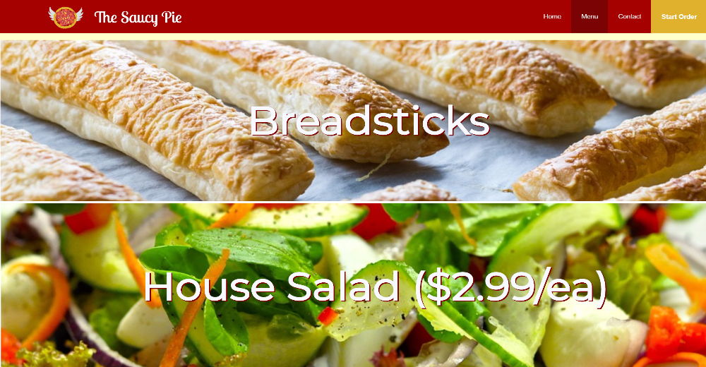
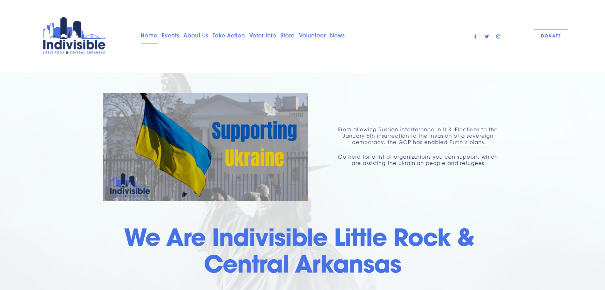

SpaceX Dragon was an individual project I was assigned in a internet technology course . The longterm goal of this project was to develop a website with the skills I have learned from the course so far. While developing this site, my knowledge of image optimization, content structuring, and styling capablilites were tested. This site was comepleted approximately on February 26, 2019. In terms of takeaways, or things I learned from developing this site, I learned that using an image gallery plug-in is a much more effecient option than coding completely from scratch. I desired to have a scrolling image gallery on the site, and I mangaged to make it happen using CSS keyframes, however, I later discovered that using a plug in would have provided the same result and would have required much less development time, which could have been put to use in other areas of the site. Overall, I was pleased with the outcome of the site. View site
The Saucy Pie was a team project I was assigned in the same internet technology course. The longterm goal of this project was to develop a website with the skills I have learned from the course so far, while also collaborating with my classmates to build a site that was both pleasing to the eye and meet the requirements of our clients. View site
This is my most recent project. Along with several other team members I worked to create a website for the non-profit organization, Indivisible Central Arkansas. Indivisible's goal is to empower people of all ages to exercise their voting rights as well help provide them the tools and information to do so. This website was developed on the popular CMS platform, Squarespace. My role as the developer and designer was to assist my team members in the creation of design elements such as a new logo and other graphic elements to be used on fliers, emails, etc. I was also responsible for implementing the layout of the content based on the wireframes provided to me by the co-designer.
I gained much development and designing experience while working on this project. I learned Content Managment Systems (CMS) are great tools to develop websites especially for people who are not very knowledgeable in coding languages. Speaking of which, this forced me to learn to communicate with people who are not fluent in web technologies and use jargon they can understand, so we all can understand each other and accomplish the our goals. Working on this project was very rewarding, however very frustrating at times. I learned that not all CMS platforms are created equally and they each come with their own limitations. This was my first time developing with SquareSpace and I often found myself comparing it to another popular CMS, WordPress, which is my preferred CMS. Developing this site using SquareSpace was challenging at times because I often encountered technical roadblocks such as the SquareSpace server having issues or a certain feature not functioning as it should.
Overall I am very satisfied with how they site turned out. While SquareSpace is not my preferred CMS I am grateful I got to gain some experience using it and gaining a good understaning of its innerworking since it could be the preferred platform of clients someday. View site